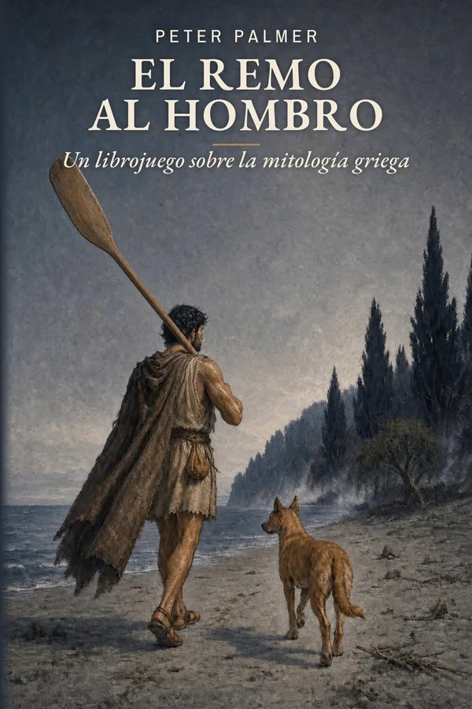

Mitología griega · a partir de 14 años
El remo al hombro
Un librojuego sobre la mitología griega
Una tormenta parte el mástil de la nave. Anfialo, nieto de Odiseo, despierta en una playa gris bajo un cielo que no conoce, con un joven perro leonado como único guía.
En el reino de las sombras todos quieren saber su nombre. Te toca elegir en quién confiar, cuándo luchar y cuándo huir, para saldar la cuenta que su familia abrió con el mar.
Próximamente